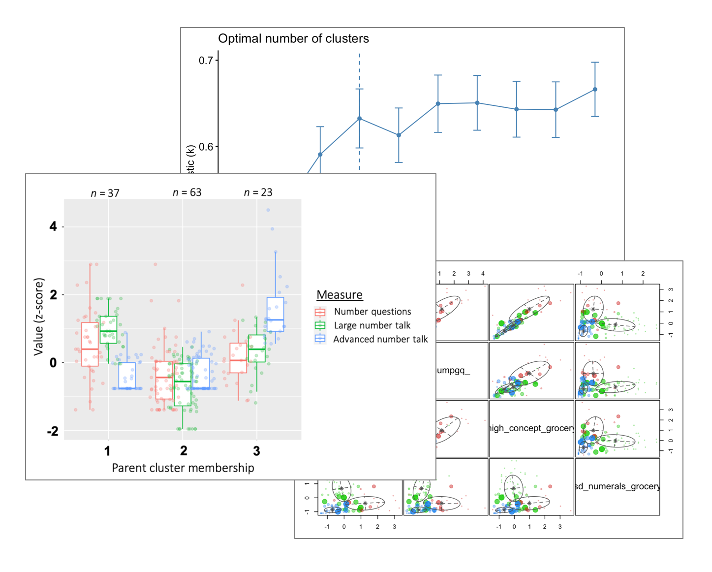

Select works
The gist: A versatile data analyst, visualizer, and storyteller.
- Dynamic structures of social interactions
- Profiles of home learning environments
- Hot dasher summer
- Exploration, uncertainty, and numerical judgements
- EDA city over here
- High cognitive demand questions
View a full list of my projects on the Scientific Communications page and/or ask me about my work as Data Analyst!

R event/time series analysis recurrence analysis inter-rater reliability descriptive analysis transcription coding ggplot2 Qualtrics Datavyu
Profiles of home learning environments
A cluster analysis of families’ early math practices, including math-related conversations and activities.
This is my dissertation project, in which I am classifying families based on various cognitive, affective, and socioeconomic factors and using these derived clusters to predict children’s academic skills.
This project extends my previous work (pictured in the boxplot), a cluster analysis of dyadic interactions using various language input measures. [Slides for Pitt Cognitive Talk Series] [Poster for Cognitive Development Society Meeting]

R k-means cluster analysis hierarchical cluster analysis multinomial logistic regression inter-rater reliability descriptive analysis transcription coding ggplot2 Qualtrics Datavyu
Hot dasher summer
A personal project to track, visualize, and analyze data on my ongoing DoorDash side gig.
R SQL

R ggplot2 Python NumPy pandas SciPy Seaborn MATLAB mixed effects logistic regression exploration simulations
Exploration, uncertainty, and numerical judgements
An eye-tracking study of exploratory behavior, i.e., eye switching frequency, during numerical comparisons and math skills in:
- Children [Jupyter Notebook]
- Adults [Slides for CMU Brain Bag] [Poster for Judgement and Decision Making Conference]
EDA city over here
I have conducted exploratory data analysis in many courses. Below are 3 of my favorite recent EDA reports. I had the most fun working on them for various reasons (e.g., I got to choose a personally interesting dataset, I was learning something new and exciting).
I always write my reports in a (kind of) tutorial style as this helps me (and hopefully others) learn!
- Text sentiment-derived features from sales representatives’ reports of customer interactions [HTML of R Markdown]
- Video games dataset from TidyTuesday [HTML of R Markdown]
- Mysterious dataset provided by the instructor, a chance to use the Seaborn library (since I prefer ggplot2 🙂) [HTML of Juypter Notebook]

R ggplot2 Python Seaborn
High cognitive demand questions
A multi-study project with 2 aims:
- Explore links between children’s exposure to caregivers’ high (vs. low-) cognitive demand (CD) questions in the home learning environment and children’s early academic skills. [Analysis code] [Journal article in Journal of Experimental Child Psychology]
- Investigate caregiver and child factors that predict high-CD questioning. [Analysis code] [Journal article (under review)]
R Stata linear regression mixed effects logistic regression inter-rater reliability power analysis transcription coding Qualtrics Datavyu